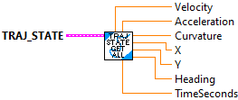
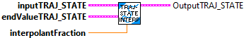

Determines if two Trajectory States are equal
Parameters:
- TrajState - TrajectoryState data structure
- Other TrajState - Other TrajectoryState data structure
Returns:
- Equals - boolean indicating if the states are equal.

Get individual items from the trajectory state cluster
Parameters:
- TrajState - TrajectoryState data structure
Returns:
- Velocity -- chassis velocity M/S
- Acceleration -- chassis accleration M/S^2
- Curvature -- chassis curvature RADIAN/METER
- X -- chassis X position M
- Y -- chassis Y position M
- Heading -- chassis heading RADIANS
- Time -- Sample time SECONDS

Get POSE from the trajectory state cluster
Parameters:
- TrajState - TrajectoryState data structure
Returns:
- TrajStatePose -- POSE data cluster for this trajectory state (X,Y,Heading)

Interpolates between two States.
Parameters:
- inputTrajState - The current trajectory state data structure
- endValueTrajState - The end value for the interpolation.
- interpolantFactor - The interpolant (fraction).
Returns:
- TrajState - The interpolated state.

Constructs a State with the specified parameters.
Parameters:
- time - The time elapsed since the beginning of the trajectory. (seconds)
- velocity - The speed at that point of the trajectory. (meters/sec)
- acceleration - The acceleration at that point of the trajectory. (meters/sec^2)
- pose - The pose at that point of the trajectory. (meter, radians)
- curvature - The curvature at that point of the trajectory.(radans/meter)
Returns:
- TrajState - TrajectoryState data structure